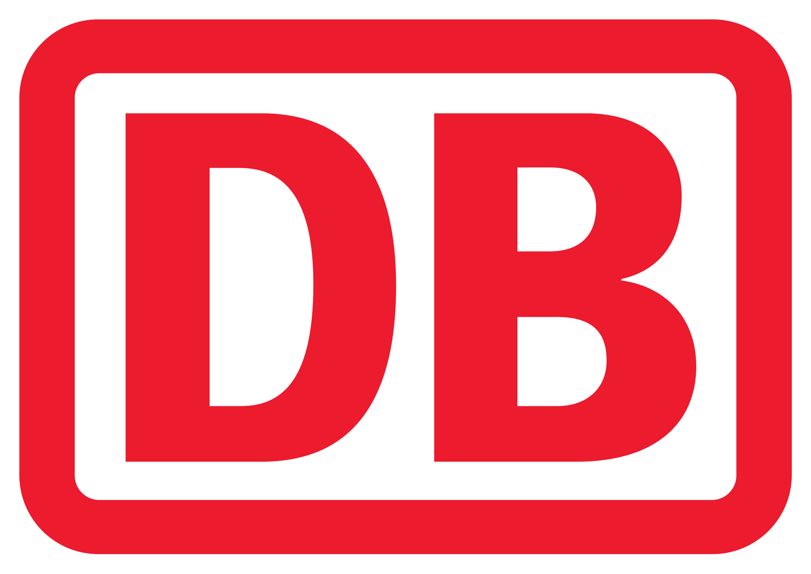

The idea of an easy way to check in and claim your reserved seat in an ICE train came to me while commuting frequently between Hamburg and Berlin. At that time I was working as a working student at a business intelligence consultency with bueros in both cities.
Train tickets and seat reservations can be purchased digitally yet the ticket inspection while travelling is still done manually with more or less pleasing human contact. As I was taking the train very early I'd like to catch up on some sleep, others may get to work already or read a book - in all cases, ticket inspection is always an interruption of focus. A clear pain point that can and should be solved using modern technology.
After taking part at the Hack.IAA Mercedes-Benz Hackathon with Robert Wolfinger and Lasse Schölkopf, two tech-savvy friends of mine, I decided to share my train check-in idea with them. We began brainstorming, discussing technical possibilites and refining the concept as well as think about viable monetization methods. As a twist of fate one month after Hack.IAA the ITS Hackathon came along which was specifically aimed at smart mobility topics and in cooperation with db.minbox from Deutsche Bahn.
Check-In concept explained: The passenger buys a Deutsche Bahn Ticket with seat reservation through the DB Navigator App. After taking his seat on the train the passenger is able to verify his ticket and seat reservation using NFC tags which are placed at each chair pair in the cabin. Through automated connection to the "Wifi on ICE" the passenger informations are sent to the board server and the train guards mobile terminal. At the next ticket inspection the passenger does not need to show his ticket yet the guard still sees the valid ticket on his terminal.
My role in this project
For everyone who is unfamiliar with what a hackathon is: The name comes from "hack" and "marathon" and combines both disciplines. A number of driven people get together and try to code, build or think of something interesting and new in a limited timeframe (usually 24 to 48 hours). This means quick thinking, long nights and interesting things to learn every second with energetic people. Most hackathons have a predefined topic around which all action and idea revolve around.
I really like this concept of working for getting new ideas into the real world without many restrictions or rules. The limiting factors are only your skill and technical limitations - and even those can be flexed with good teamwork and improvisation. In this case I took the role as Product Owner and User Interface Designer which made me responsible for creating app mockups, the final pitch presentation and keeping the progress on track.
The first few hours were spent with a group storming and discussing all ideas that came to us. In this phase anything goes, get everything out of your head and make room for ideas to be formed within the group. After an intense discussion we usually take a break to sort our thoughts and get back together to decide on a minimum-viable product with a vision we want to achieve until the deadline of the hackathon. This phase is both exciting and exhausting. My focus is to carefully outline a goal we are sure to achive within the given time, build something to show the audience (e.g. a prototype or mockup) and build a good and relatable story around it.
{kind=link}